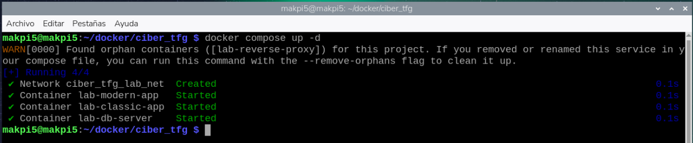
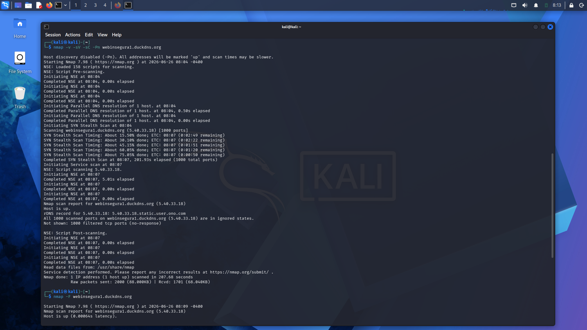
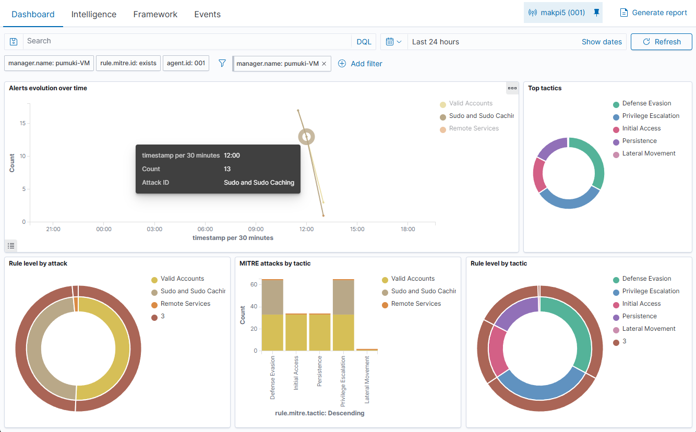

Informe de Pentest y Soluciones de Remediación
Estructuración formal y académica del reporte técnico de auditoría. Presenta el consolidado de vulnerabilidades, matriz CVSS de criticidad, y directivas de remediación basadas en los hallazgos de las fases de reconocimiento y explotación.
📋 Índice Técnico de la Memoria del Pentest
Para la estructuración final de la memoria del TFG, se establece el siguiente índice académico y profesional de auditoría:
Resumen Ejecutivo
Alcance del Pentest
Metodología Ofensiva
Reconocimiento Pasivo y OSINT
Escaneo y Enumeración Activa de Puertos (Nmap)
Análisis de Vulnerabilidades del Servidor (OpenVAS / CVE-2025-55182)
Explotación Web y SQL Injection (DVWA)
Explotación RCE por Deserialización RSC (React2Shell)
Post-Explotación, Secuestro de Sesión y Exfiltración de Credenciales
Correlación y Monitoreo en el SIEM (Wazuh)
Hallazgos y Remediación Técnica
Mitigación de Inyección de Componentes React (React2Shell)
Mitigación de Parámetros Dinámicos Concatenados (SQLi)
Matriz de Criticidad y Priorización (CVSS v3.1)
Conclusiones y Recomendaciones Académicas
📊 Matriz de Criticidad CVSS v3.1
Evaluación y cuantificación de riesgos de los fallos de seguridad explotados y detectados en la red de pruebas perimetral:
| ID | Vulnerabilidad | CVSS Score | Severidad | Vector de Puntuación |
|---|---|---|---|---|
| VULN-01 | React2Shell RCE (Next.js CVE-2025-55182) | 10.0 | Crítica | CVSS:3.1/AV:N/AC:L/PR:N/UI:N/S:C/C:H/I:H/A:H |
| VULN-02 | SQL Injection - Bypass de Login (DVWA) | 7.5 | Alta | CVSS:3.1/AV:N/AC:L/PR:N/UI:N/S:U/C:H/I:N/A:N |
| VULN-03 | Secuestro de Sesión por Robo de Cookie (Hijacking) | 6.8 | Media | CVSS:3.1/AV:N/AC:H/PR:N/UI:R/S:U/C:H/I:L/A:N |
🛡️ Soluciones Técnicas Oficiales de Remediación
Las vulnerabilidades descritas se mantuvieron activas intencionadamente en el entorno de pruebas para la demostración práctica del TFG. En un entorno real de producción, la remediación de dichos fallos se realiza de ac
Mitigación de Ejecución Remota de Código (React2Shell RCE)
La inyección/deserialización de comandos (CVE-2025-55182) reside en el protocolo de componentes de servidor (RSC) de Next.js. El fallo se debe a que la versión vulnerable de la biblioteca procesa parámetros de entrada dinámicos sin sanitizar en funciones de deserialización inseguras, permitiendo a un atacante inyectar funciones nativas de Node.js (como child_process.exec).
Acciones de Remediación Detalladas para Entornos Reales:
- Actualización Inmediata del Framework: Actualizar Next.js en el archivo de dependencias
package.jsona una versión de parche segura (15.5.7 o superior). Esto deshabilita la evaluación directa de llamadas RSC enviadas de forma directa mediante métodos POST alterados. - Implementación de WAF (Web Application Firewall): Configurar reglas en el Firewall de Aplicación Web (como Cloudflare o ModSecurity) para detectar y bloquear payloads que contengan firmas de deserialización JSON de componentes de servidor con patrones sospechosos de inyección de código de sistema.
- Restricción del Entorno de Contenedores Docker: Configurar el Dockerfile para que el proceso Node.js corra bajo un usuario de bajos privilegios en lugar de root (añadiendo la directiva
USER nodeantes del punto de entrada). De esta manera, aunque se logre un RCE, se bloquea el acceso de escritura al directorio raíz del contenedor y a binarios críticos del sistema operativo.
Mitigación de Inyección SQL y Seguridad del Laboratorio DVWA
Nota Académica del TFG: La aplicación DVWA (Damn Vulnerable Web Application) está diseñada deliberadamente para ser altamente vulnerable y carece intencionalmente de cualquier tipo de protección. Su objetivo exclusivo es servir como laboratorio controlado para realizar prácticas de hacking ético, permitiendo explotar inyecciones SQL en niveles de seguridad bajos y medios para la demostración forense. Sin embargo, en una infraestructura de producción real, este tipo de fallos no son admisibles y se solucionan mediante directrices estrictas de desarrollo seguro.
Acciones de Remediación Detalladas para Entornos Reales:
- Consultas Parametrizadas y Sentencias Preparadas (Prepared Statements): Reemplazar por completo las consultas concatenadas directas (ej.
SELECT * FROM users WHERE id = '$id') por sentencias parametrizadas usando PDO en PHP (ej.$stmt = $pdo->prepare('SELECT * FROM users WHERE id = :id')). Al separar la estructura sintáctica de la consulta de los datos de entrada del usuario, el motor de base de datos trata el input estrictamente como un literal o string, neutralizando cualquier intento de inyección de lógica maliciosa. - Mínimo Privilegio de la Base de Datos: El usuario de base de datos MariaDB utilizado por el backend web en producción debe estar limitado exclusivamente a permisos DML (SELECT, INSERT, UPDATE, DELETE) sobre la base de datos de la aplicación. Se deben eliminar los privilegios globales de superusuario y restringir el acceso a tablas del sistema como
information_schemaomysql.user, minimizando la capacidad de exfiltración lateral. - Validación y Sanitización Estricta (Lista Blanca): Validar que las entradas numéricas sean convertidas explícitamente a tipos enteros (ej. usando
(int)en PHP) antes de incluirlas en el flujo del backend, y rechazar de forma proactiva cualquier petición que no cumpla con el formato o expresión regular del parámetro esperado.
⭐ Evidencias Clave del Laboratorio
Para la defensa académica ante el tribunal del TFG, las siguientes 5 capturas representan las evidencias técnicas indispensables y más contundentes del proyecto ofensivo:
Despliegue y Arranque de Contenedores
Demostración del orquestador Docker activo en la Raspberry Pi 5. Valida la creación de la red aislada de subredes internas y el inicio de los microservicios vulnerables DVWA y Next.js.

Escaneo Activo de Servicios (Nmap)
Evidencia del escaneo de puertos y servicios ejecutado desde Kali Linux targeting al subdominio público, identificando la apertura de puertos TCP y la versión de Apache2.

Bypass SQLi y Extracción de Credenciales
Resultado de la explotación SQL Injection (DVWA), logrando la extracción del esquema de la base de datos MariaDB y la obtención de hashes MD5 de administración.

Lectura de Bandera React2Shell (RCE)
Evidencia forense de la intrusión remota ejecutada desde Burp Suite sobre canal seguro HTTPS. Muestra los comandos inyectados en la petición y la exfiltración final de flag.txt.

Correlación y Alertas del SIEM (Wazuh)
Consolidación de las alertas de severidad alta generadas en el dashboard de Wazuh tras detonar el exploit React2Shell, vinculando las reglas críticas del SOC.
